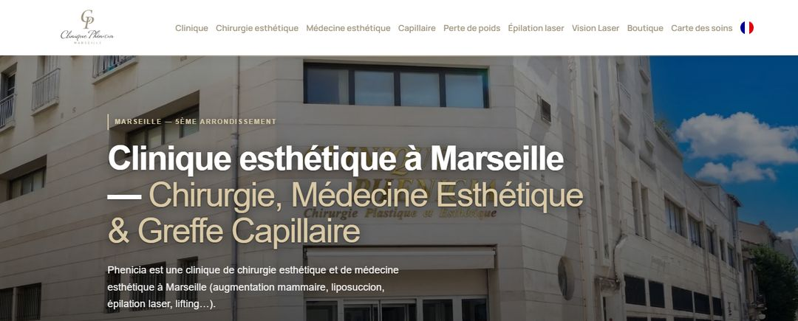

Agence SEO · Marseille
Agence SEO pour chirurgien esthétique à Marseille.
Notre équipe est basée à Marseille. C'est aussi là que nous avons accompagné nos références les plus fortes. Si vous cherchez une agence SEO pour chirurgien esthétique à Marseille ou près de Marseille, voici ce que Google montre vraiment à vos patientes, et ce qu'il faut construire pour y apparaître.
Mis à jour le · Réseau HANA

- Réseau HANA est une agence SEO dédiée aux chirurgiens plasticiens et esthétiques, basée à Marseille.
- Sur « chirurgien esthétique Marseille », Google affiche une carte avec des fiches, un aperçu IA, Doctolib dans les premiers résultats, puis des sites de chirurgiens du 8e et de cliniques privées (relevé du 3 novembre 2026).
- Les patientes marseillaises cherchent par quartier (13008, rue Paradis), par prix et par avis : il faut une page par intervention, une page honoraires et une fiche Google suivie.
- Nous avons accompagné à Marseille la Clinique Phenicia et le centre Phenicia Medical Spa, et un médecin esthétique à Aix-en-Provence.
- Un seul chirurgien plasticien par ville. Le prix est le même qu'ailleurs : 2 050 € HT par mois.
Une équipe à Marseille
Une agence SEO pour chirurgien esthétique, basée à Marseille.
Le SEO, ou référencement naturel, c'est le travail qui fait apparaître votre cabinet sur Google sans payer de publicité. Notre équipe le fait depuis Marseille. Nous connaissons la ville comme vos patientes la parcourent : la rue Paradis, le Prado, les cliniques privées, l'hôpital de la Conception, les patientes qui viennent d'Aix-en-Provence ou d'Aubagne.
Ce n'est pas un argument de proximité pour la forme. Pour le référencement d'un chirurgien esthétique à Marseille, connaître le terrain change trois choses :
- 01Les mots des Marseillaises
Elles tapent « 13008 », « rue Paradis », « la Conception ». Vos pages doivent parler leur langue, pas un vocabulaire générique.
- 02La densité du 8e
Beaucoup de chirurgiens exercent à quelques rues les uns des autres. Sur la carte Google, la différence se joue sur peu de choses.
- 03Les références à voir
Les sites que nous avons accompagnés ici sont publics. Vous pouvez les ouvrir avant de nous appeler.
Relevé Google du 3 novembre 2026
Ce que Google affiche quand on tape « chirurgien esthétique Marseille ».
Nous avons fait la recherche le 3 novembre 2026, depuis la France, sans être connectés à un compte Google. Voici, dans l'ordre, ce qu'une patiente voit.
| À l'écran | Ce que ça veut dire pour vous |
|---|---|
| Un aperçu IA | Google résume lui-même la réponse en haut de page, en citant quelques sources. Être une de ces sources, c'est le travail GEO (visibilité dans les IA). |
| La carte Google Maps | Quelques fiches de praticiens, avec leurs étoiles. Sans fiche Google complète et suivie, vous n'y êtes pas. |
| Doctolib | Dans les 4 premiers résultats. Votre profil doit dire la même chose que votre site. |
| Sites de chirurgiens | Beaucoup exercent dans le 8e ou rue Paradis, et plusieurs ont « Marseille » dans leur adresse web. |
| Cliniques privées | Elles ont des sites anciens et riches. Votre page d'intervention doit être plus claire que la leur. |
| Publicités | Aucune lors du relevé. Tout se joue donc sur le référencement naturel. |
Conséquence : à Marseille, votre fiche Google, votre profil Doctolib et une page par intervention pèsent autant que votre site lui-même. Une visibilité Google à Marseille se construit sur les trois en même temps.
Ce que tapent vos patientes
Les recherches que Google suggère à Marseille, et la page qui y répond.
Quand on commence à taper « chirurgien esthétique marseille » ou « rhinoplastie marseille », Google propose des suites. Ce sont les recherches les plus fréquentes. Chacune appelle une réponse précise sur votre site.
- 01« tarif », « pas cher », « rhinoplastie marseille prix »
Une page honoraires qui explique ce qui fait varier le prix, ce que comprend le devis, le délai de réflexion. Sans prix d'appel ni promotion.
- 02« 13008 », « rue Paradis »
Une adresse exacte et identique sur la fiche Google, le site, Doctolib et les annuaires. Un plan d'accès, les transports, le stationnement.
- 03« la Conception »
Certaines patientes cherchent par hôpital. Si vous y opérez ou y avez exercé, votre parcours doit le dire, simplement et exactement.
- 04« femme »
Une page « qui suis-je » avec votre photo, votre parcours et vos qualifications. Les patientes veulent savoir qui va les opérer.
- 05« avis »
Des avis Google réels, réguliers, et une réponse à chacun sous 24 h, sans jamais confirmer qu'une personne est votre patiente.
- 06« avant après », « ultrasonique »
Une page par technique qui explique déroulé, suites et limites. Les avant-après ne servent jamais d'argument.
C'est la base de notre méthode de référencement Google : une intervention, une page, une recherche réelle.
Nos références à Marseille
Ce que nous avons accompagné, à quelques rues de vous.
À Marseille et autour, nous avons accompagné des établissements dont les sites sont publics. Vous pouvez les consulter vous-même.
La Clinique Phenicia
Une clinique marseillaise que nous avons accompagnée. Son site est en ligne.
Phenicia Medical Spa
Un centre de médecine esthétique de 600 m². Notre équipe a conçu et référencé son site, sorti en 2025.
Un médecin esthétique à Aix-en-Provence
Le Dr Navarro, que nous avons accompagné. Preuve que « près de Marseille » se travaille aussi : les patientes d'Aix ne cherchent pas avec les mêmes mots que celles du 8e.
Toutes nos références, en France et en Suisse, sont sur la page Références.

Exclusivité
Dans le 8e, votre confrère est peut-être dans la même rue.
À Marseille, plusieurs chirurgiens plasticiens exercent à quelques centaines de mètres les uns des autres. Si la même agence les suit tous, elle écrit pour chacun des pages qui visent les mêmes recherches, et la carte Google n'a que quelques places.
Chez HANA, la règle est simple : un seul chirurgien plasticien par ville. Ce que nous construisons pour vous ne sert qu'à vous.
Les six premiers mois
SEO chirurgien plasticien à Marseille : par où nous commençons.
- Une fiche Google revue : bonne catégorie, adresse exacte, photos du cabinet, publications chaque semaine (voir Fiche Google).
- Les mêmes nom, adresse et téléphone sur le site, Doctolib, les annuaires et les cliniques où vous opérez.
- Une page par intervention, en commençant par celles que vous voulez développer.
- Une page honoraires qui informe, pour les recherches « tarif » et « prix ».
- Des réponses écrites aux questions que posent vos patientes en consultation.
- Une mesure chaque mois de ce que répondent ChatGPT, Gemini et Perplexity sur votre ville (voir Visibilité dans les IA).
Les deux premiers mois posent les fondations. Les premiers effets se mesurent en général entre le 4e et le 6e mois, d'abord sur les recherches précises. Nous ne garantissons aucune position : vous payez un travail daté et mesuré.
En pratique
Travailler avec une agence marseillaise.
Le prix ne change pas parce que nous sommes voisins. Il est public et le même pour tous : 2 050 € HT par mois, tout compris. La création ou la refonte du site est à part, à partir de 2 000 € HT. Le détail est sur la page Tarifs.
Un seul interlocuteur. Votre chef de projet suit tout : site, fiche Google, contenus, vidéos. Une visio de 30 minutes chaque mois, et l'Espace HANA pour suivre le travail à toute heure.
Un rendez-vous à votre cabinet. Nous sommes à Marseille : nous venons vous voir à votre cabinet, pour le premier rendez-vous comme pour faire le point en cours de route. Les autres échanges se font en visio, quand cela vous arrange.
Vous restez propriétaire. Site, nom de domaine, textes et fiche Google sont à vous. Après six mois, vous pouvez arrêter avec un mois de préavis.
Questions fréquentes
Les questions qui reviennent.
Pouvez-vous venir à mon cabinet ?
Oui. Nous sommes basés à Marseille et nous venons vous voir à votre cabinet. Les autres échanges se font en visio, quand cela vous arrange.
Existe-t-il une agence SEO pour chirurgien esthétique à Marseille ?
Oui. Réseau HANA est basé à Marseille et ne travaille que pour la chirurgie plastique et la médecine esthétiques, depuis près de dix ans.
Pourquoi mon cabinet de la rue Paradis n'apparaît-il pas sur Google ?
Dans le 8e, beaucoup de chirurgiens exercent dans quelques rues. Google départage avec la fiche Google (catégorie, adresse, avis), une page claire par intervention et des informations identiques partout. Un état des lieux de votre présence en ligne montre ce qui manque.
Combien coûte le référencement d'un chirurgien esthétique à Marseille ?
Chez HANA, le prix est public et le même partout : 2 050 € HT par mois, tout compris. La création ou la refonte du site est à part, à partir de 2 000 € HT.
Faut-il afficher ses tarifs pour sortir sur « chirurgien esthétique Marseille tarif » ?
Il faut une page qui explique comment sont fixés vos honoraires, ce que comprend le devis et le délai de réflexion. Pas de promotion ni de prix d'appel : ce n'est pas compatible avec le cadre déontologique.
Travaillez-vous avec des chirurgiens près de Marseille ?
Oui. Nous avons par exemple accompagné un médecin esthétique à Aix-en-Provence. Un seul chirurgien plasticien par ville.
En combien de temps voit-on des effets à Marseille ?
Les deux premiers mois posent les fondations. Les premiers effets se mesurent en général entre le 4e et le 6e mois, d'abord sur les recherches précises comme « rhinoplastie ultrasonique Marseille ».
Ma ville est-elle libre ?
Parlons de votre cabinet marseillais.
Votre ville, votre nom, votre téléphone : c'est tout. Sous 48 h ouvrées, nous vous rappelons pour vous dire si votre ville est encore libre. Et nous vous offrons votre diagnostic de visibilité : où vous apparaissez sur dix recherches que font vos patient(e)s, l'état de votre fiche Google, et ce que ChatGPT et Gemini répondent aujourd'hui à quelqu'un qui cherche un chirurgien plasticien chez vous.
Ensuite, trente minutes en visio pour en parler. Nous vous montrons deux cas chiffrés et anonymisés, issus de projets que nous avons menés. Si c'est pertinent, nous vous faisons une proposition, ou un devis pour votre site. Sans engagement.
- 06 99 30 58 73Réseau HANA. Du lundi au vendredi, 9 h à 19 h.
- contact@hanahealth.frRéponse sous 24 h ouvrées.
- France, Belgique, SuisseRendez-vous en visio, où que vous soyez.